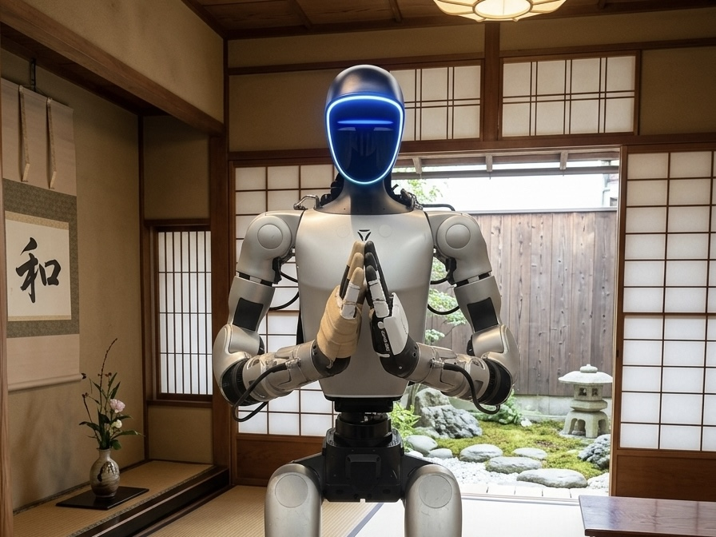
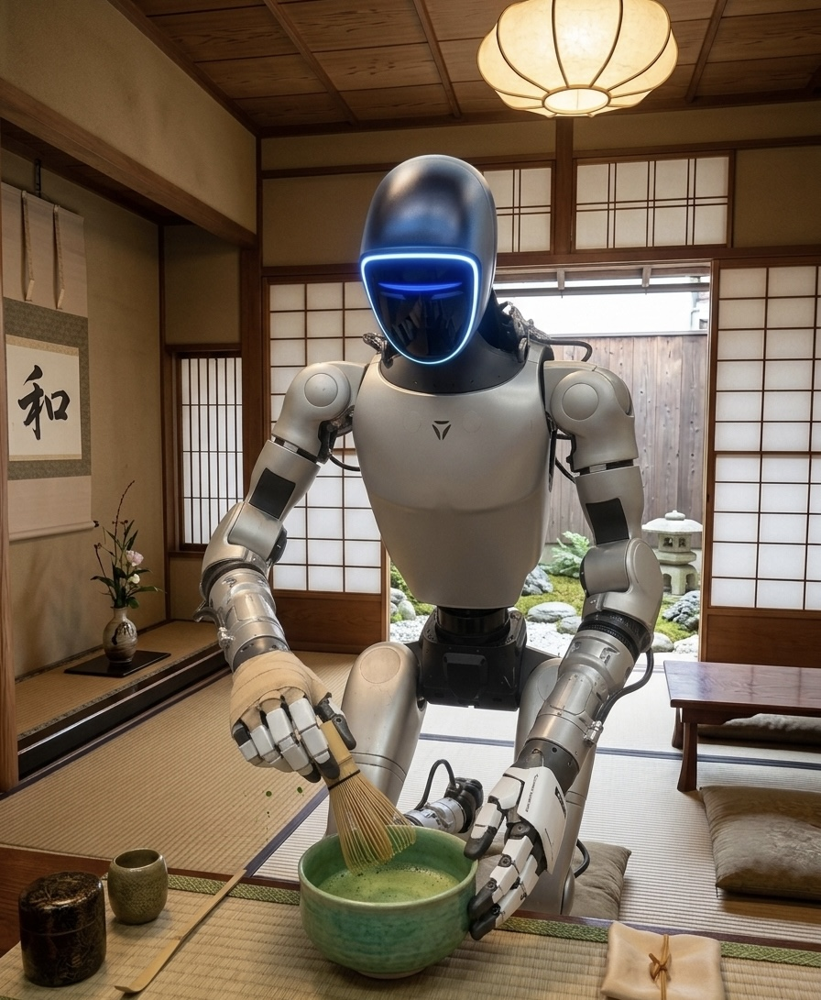
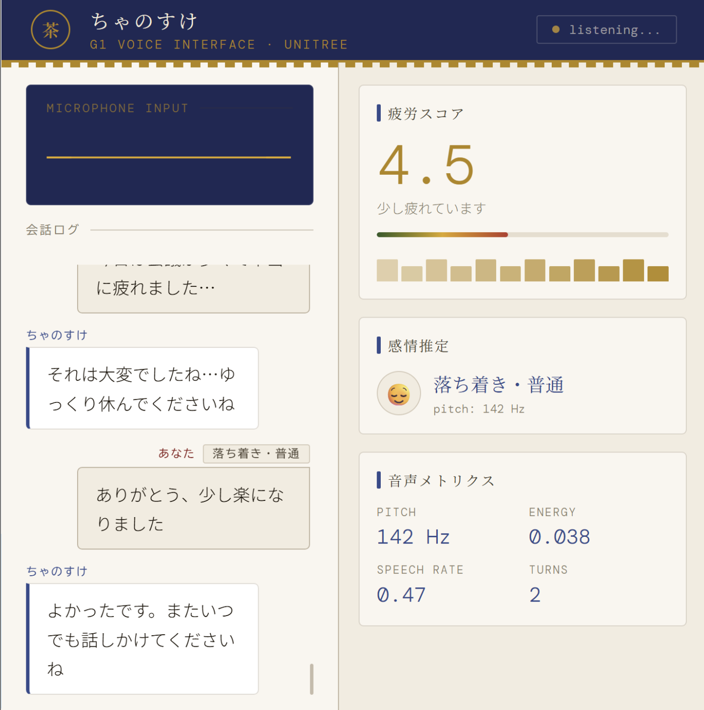
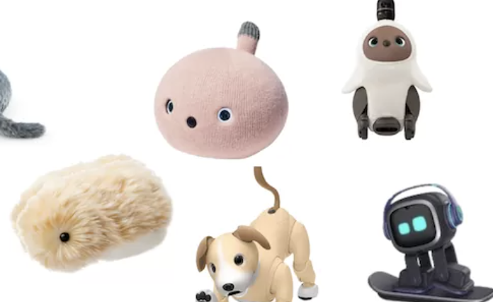

想像してみてください
長い1日を終えて、ようやく家に帰ってきたとき。
玄関を開けた瞬間に、誰かがこちらに気づいて、
「おかえりなさい」
「今日もおつかれさまです」
「今日もおつかれさまです」
と、静かに迎えてくれたら。
ロボットと生きる未来をデザインする
長い1日を終えて、ようやく家に帰ってきたとき。
玄関を開けた瞬間に、誰かがこちらに気づいて、
と、静かに迎えてくれたら。
それだけで、少し気持ちがほどける。
そんな経験はないでしょうか。
そこに大きな価値があると考えました。
和のココロが提案するのは
効率化のためのロボットではありません。
私たちが目指したのは、
心をほどくためのロボット
おもてなしとは、
相手の状態に気づき、言葉をかけ、
所作で気遣いを伝え、
その人の時間を少し心地よくすること
「お出迎え」

「お茶の心」

本物の抹茶を作ることが目的ではなく、
気遣いの所作そのものを表現
「今日はどんな一日でしたか？」
ユーザー：「ちょっと疲れた」
茶之助：「それは大変でしたね。
でも、今日も本当におつかれさまでした」
単なるQ&Aではなく、
少し気が抜けて、少し安心できる会話
感情判定エンジン

録音音声から特徴量を抽出し、ルールで集計。Ollama のプロンプトに付加して文脈ある応答に繋げます。
librosa.pyin()librosa.feature.rms()librosa.feature.mfcc()人間の骨格動作を G1 に写しとる
従来のロボット
効率化
掃除、搬送、警備
茶之助
心の気遣い
迎える、労う、和ませる
日本の「おもてなし」を
振る舞いに落とし込む体験設計を目指しました

ペット型・癒し系
茶之助（和のココロ）
| 観点 | ペット型・癒し系ロボ | 茶之助（和のココロ） |
|---|---|---|
| 主な価値 | 癒し・可愛らしさ・同居の楽しさ | おもてなし、所作の意味、会話の文脈 |
| 身体表現 | 小型・撫でる・寄り添う動作 | ヒューマノイドによる礼・お茶の心・全身の所作 |
| 文化・文脈 | 限定的 | 日本のお作法・間を身体で表現 |
チームE · 和のココロ
便利だから一緒にいるのではなく、
いてくれると、ちょっと嬉しい。
そんなロボットとの関係を提案します。